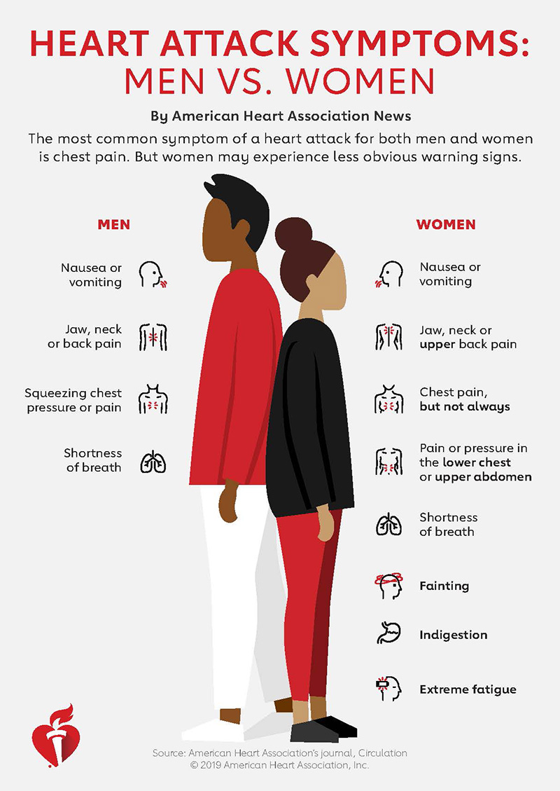

Heart disease is responsible for the most number of deaths in the United States, and it often results in heart attack. One of the primary indicators of heart attack is chest pain, but women often present other symptoms when experiecing a heart attack. Answer a few short questions to determinte if you might be experiencing a heart attack.
 Get StartedThe following code has been developed by students and/or researchers of the Freshman Research Initiative DIY Diagnostics Stream at The University of Texas at Austin. This code is shared for demonstration purposes and should not be considered a product -- it is for entertainment purposes only. Any user of this code does so at their own risk. Members of the DIY Stream, FRI, and The University of Texas system are not liable for anything related to this code.
THIS CODE SHOULD NOT BE USED TO DIAGNOSE ANY KIND OF MEDICAL CONDITION.